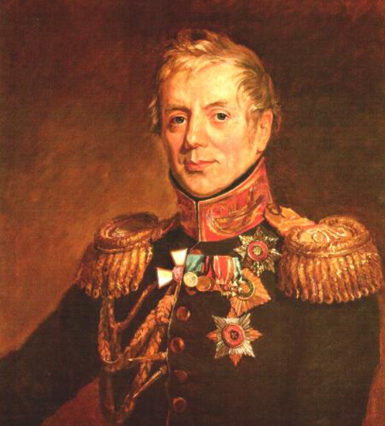
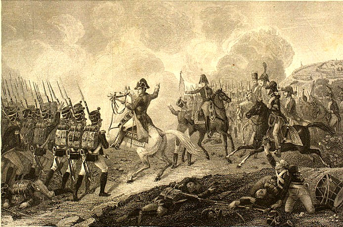
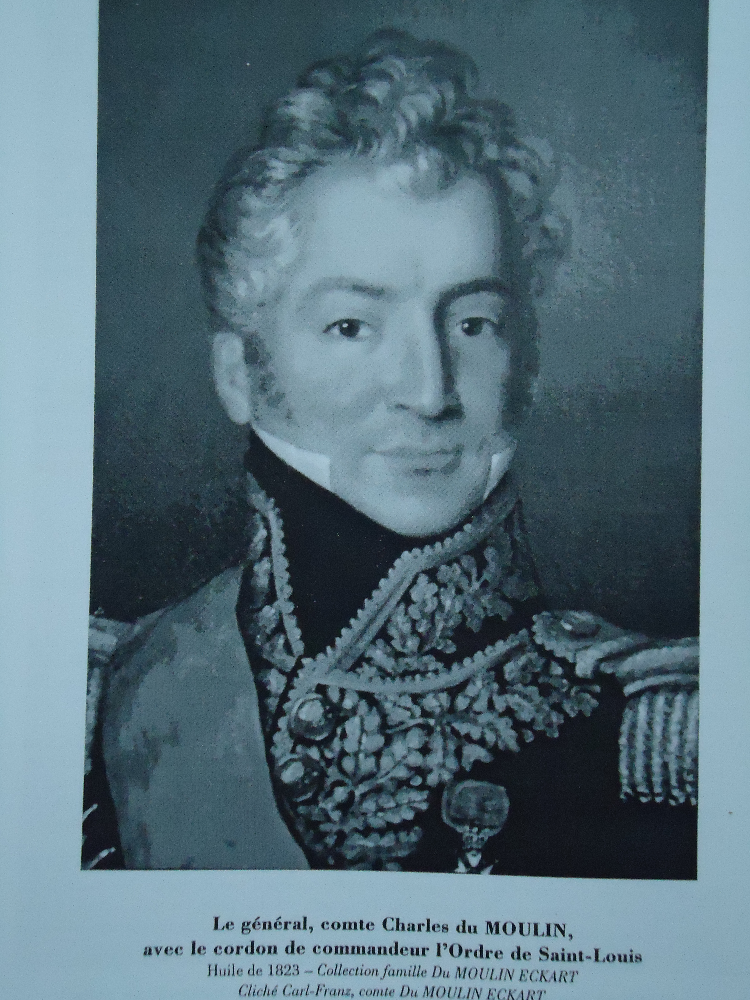
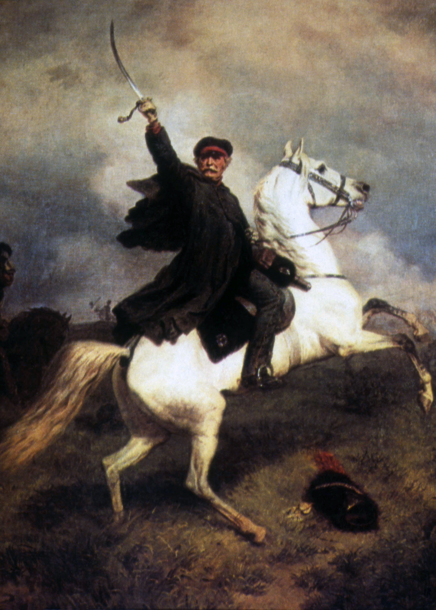

뤼첸 전투 (6) - 나폴레옹의 속셈
게시: 2022-10-10T06:30:25+09:00
볼콘스키 대공은 원래 게으른 쿠투조프를 감시하고 독촉하기 위해 짜르가 쿠투조프의 참모로 알박기를 해놓은 짜르의 심복으롯, 누구보다 짜르의 성향을 잘 파악하고 있었습니다. 그랬기 때문에 그는 짜르가 지금은 자제하고 있지만 나중에 승리가 확실해지면 짜르 본인이 직접 러시아 예비군단의 선두에 서서 나폴레옹에게 막타를 쳐서 승리의 주역이 되고 싶어한다는 것을 잘 알고 있었습니다. 마침 토르마소프가 지휘하는 러시아 예비군단의 선두 부대의 지휘관은 코노브니친(Petr Petrovich Konovnitsin)으로서, 원래 쿠투조프의 참모였다가 볼콘스키 대공에 의해 교체된 인물이었습니다. 그 때문에 코노브니친은 볼콘스키에 대해 안 좋은 감정을 가지고 있었을 것 같지만 실은 그렇지 않았습니다. 코노브니친도 쿠투조프 못지 않게 게으른 인물로서 나폴레옹을 추격하여 독일로 쳐들어가는 일에 별 열의가 없었는데 때마침 걸린 병을 핑계로 장기 병가를 내고 있던 참에 볼콘스키에 의해 교체된 것이었고, 따라서 볼콘스키와의 관계는 그다지 나쁘지 않았습니다. 볼콘스키는 러시아 예비대를 짜르가 마지막 순간에 직접 지휘하도록 아껴두고 싶었고, 그래서 본인 책임 하에 제멋대로 별도의 전령을 코노브니친에게 보내 다음과 같은 메시지를 보냈습니다. "전황이 매우 좋으니 굳이 서둘러 강행군 해서 오실 필요가 없습니다."

(코노브니친입니다. 나폴레옹보다 5살 연상으로서 당시 49세의 한창 나이였던 그는 사실 별다른 전공을 많이 세운 사람은 아니어서, 스웨덴과의 전쟁 및 폴란드 반란 진압 등에서 활약했습니다. 그는 스몰렌스크로부터 후퇴할 때 후위 부대 작전을 지휘했고, 보로디노 전투에서 바그라티온이 전사한 뒤에는 그의 자리를 맡아 러시아군 전체의 좌익을 지휘하기도 했으며, 이 뤼첸 전투에서 부상을 입은 이후로는 일선 지휘관을 역임하지는 않고 알렉산드르의 궁정일을 맡아 했습니다. 그의 말년은 자식들 때문에 그다지 행복하지는 않았습니다. 그의 아들과 딸은 모두 데카브리스트(Decembrist)의 난에 연루되어, 아들은 졸병으로 강등되어 카프카스 지방으로 배치되었고, 딸은 역시 데카브리스트였던 남편을 따라 자진해서 시베리아 유배지로 가버렸습니다.) 한편, 먼저 네를 4개 마을로 보낸 나폴레옹은 다른 군단장들에게도 필요한 지시를 내린 뒤 서둘러 4개 마을 전투 현장으로 말을 달렸습니다. 가는 길 내내 나폴레옹은 겁에 질린 어린 프랑스군 신병들이 조금씩 무리를 지어 허겁지겁 도망치는 모습을 보고 눈살을 찌푸려야 했습니다. 그러나 어차피 그런 일은 전장에서 흔히 일어나는 일이었고, 현장에 도착하자 황제의 모습을 본 병사들이 우렁차게 Vive l'Empereur (황제 폐하 만세)를 외쳤습니다. 그런 환호 속에서도 나폴레옹의 눈과 두뇌는 재빨리 움직였습니다. 전해지는 바에 따르면 그는 망원경으로 상황을 파악한 뒤 이렇게 외쳤다고 합니다. "이건 1798년의 피라밋 전투다!" 갑자기 웬 피라밋이 나왔을까요? 이건 다름 아니라 기병대가 막강한 적군에 비해 아군은 보병에 의존하는 모습이었기 때문이었습니다. 하지만 그건 과장된 표현에 불과했습니다. 1798년의 이집트 마멜룩 부대와는 달리 연합군은 기병대보다는 보병들이 더 많았고, 또 마멜룩에 의해 끌려나온 이집트 농민들로 이루어진 당시의 보병들과는 달리 프로이센 보병들은 무장과 투지가 프랑스군에 비해 결코 떨어지지 않았습니다. 그러나 연합군의 기병대가 훨씬 막강하다는 점은 확실했습니다. 그래서 나폴레옹은 적의 기병대가 4개 마을의 북쪽, 즉 뤼첸까지 펼쳐진 탁 트인 공간으로 전개되지 못하도록 이 4개 마을에 적을 붙들어 놓아야 한다고 판단했습니다. 게다가 적에게는 당장 4개 마을 전투에 투입된 것 외에도 더 많은 병력이 있음이 확실했습니다. 그렇지 않다면 이렇게 도전을 해오지는 않았을테니까요. 결국 나폴레옹의 판단은 일단 이 4개 마을에서 적과 소모전을 펼치며 시간을 벌어야 한다는 것이었습니다. 무엇을 위한 시간이었을까요? 그건 뒤에서 보시겠습니다.

(뤼첸 전투에서의 나폴레옹입니다.) 그렇게 판단을 내린 오후 3시, 나폴레옹은 네의 모든 전력을 예비대도 거의 두지 않고 다 쏟아부었습니다. 뒤물랭(Charles Dumoulin) 장군의 여단 4천 병력만 전투에 참여하지 않고 제1선 뒤쪽에 바싹 붙어 대기했을 뿐, 정말 전체 병력이 모두 머스켓 총을 쏘아대며 전투에 나섰습니다. 이건 결정적 순간을 위한 예비대를 중요시하던 당시 전술에서 꽤 이례적인 경우였습니다만 이유가 있었습니다. 나폴레옹은 자신의 뒤를 따라 곧 도착할 1만5천 정도의 근위대를 믿고 있었기 때문이었습니다. 뒤물랭의 4천을 제외한 3만2천이 나폴레옹의 독려를 받으며 한꺼번에 투입되자 곧장 전세가 뒤집어졌습니다. 이떄 4개 마을 현장에 투입된 프로이센군은 고작 1만8천에 불과했기 때문이었습니다. 네의 제3 군단은 그로스괴르쉔을 제외한 3개 마을을 모두 점령하며 기세를 올렸습니다. 일이 급해지자 연합군은 빌헬름 왕자의 기병대 외에도 빈칭게로더의 러시아군 예비 기병대까지 4개 마을 안쪽 공터에 투입하여 프랑스군을 저지하려 노력했으나 피해만 입고 물러나야 했습니다. 대규모 기병대가 활약하기에는 그 4개 마을 가운데의 공터는 장애물이 너무 많았고, 카야 마을 남쪽에 늘어선 프랑스군 포병대가 연합군의 기병대를 지속적으로 때려눕혔기 때문이었습니다.

(뒤물랭 장군입니다. 나폴레옹보다 1살 많았던 그는 프랑스 리모쥬(Limoges) 지방의 여관집 아들로 태어났는데, 어려서부터 무척 공부를 잘 했기 때문에 집안에서도 적극 후원하여 10대의 나이에 파리 대학에서 공부를 할 수 있었고 그 덕분에 혁명군에서 장교로 임관할 수 있었습니다. 뒤물랭은 눈부신 전공을 올린 것은 별로 없습니다만 그의 결혼은 무척 극적이었습니다. 아우스테를리츠 전투 이후 뮌헨의 무도회에서 만난 바이에른의 장관인 폰 에카르트(von Eckart) 남작의 외동딸 카트린-오이게니(Catherine-Eugénie)와 사랑에 빠진 그는 결혼을 하려 했으나 폰 에카르트 남작의 격렬한 반대에 부딪히자 그대로 그 21세의 아가씨를 데리고 파리로 야반도주를 했습니다. 분노한 아빠 남작이 프랑스 측에 '납치' 혐의로 고소했고, 나폴레옹까지 직접 나서서 베르티에 뿐만 아니라 비밀경찰의 수장이었던 푸셰에게까지 이중으로 면밀히 조사하라고 지시를 할 정도였습니다. 일이 복잡해진 것은 바로 몇 달 전에 뒤물랭이 다른 여자와 결혼한 유부남이라는 의혹 제기가 있었기 때문이었는데, 결론적으로 뒤물랭은 이 모든 혐의를 극복하고 폰 에카르트 남작의 허락까지 받아내어 이 아가씨와 결혼에 성공했습니다. 뒤물랭은 나중에 이 와이프 덕을 톡톡히 보는데, 라이프치히 전투 이후 나폴레옹의 패망이 분명해지자, 그는 프랑스군을 이탈해 자기 와이프의 영지로 숨어버렸습니다. 덕분에 백일천하 때도 참여하지 않았고, 그로 인해 반-보나파르트파로 간주되어 부르봉 왕정 하에서는 관직을 얻어 잘 지내며 78세까지 장수했습니다. 무엇보다, 사랑하는 아내와의 사이에 무려 10명의 자녀를 두었습니다.) 나폴레옹은 이렇게 과감하게 여기서 결판을 내겠다며 덤벼들었지만, 비트겐슈타인은 선듯 그렇게 할 수가 없었습니다. 위에서 언급한 것처럼 러시아 근위대와 러시아 예비대가 아직 현장에 도착하지 않았기 때문이었습니다. 베르크의 작은 러시아 군단은 마르몽의 군단과 스타지들 마을에서 대치 상태였고, 요크가 지휘하는 1만 5천에 달하는 러시아 및 프로이센 사단들은 그로스괴르쉔 남쪽 1km 지점에서 초조하게 대기 중이었습니다. 그러다 결국 블뤼허가 나폴레옹의 공격에 의해 밀리는 것을 보자 요크는 참지 못하고 클라인괴르쉔에 지원 병력을 조금씩 축차 투입하기 시작했습니다. 그런 답답한 상황 속에서 오후 4시가 되자 마침내 토르마소프의 러시아 예비군단의 선두부대가 현장에 도착하기 시작했습니다. 이거야말로 짜르가 기다리던 순간이었습니다. 비트겐슈타인은 아직 결전에 대한 결정을 내리지 못했지만 짜르는 명령 체계 같은 것은 아랑곳하지 않고 볼콘스키를 요크 대공에게 보내 '이제 예비대가 왔으니 총공격에 나서라'는 명령을 내렸습니다. 주로 프로이센군으로 구성된 연합군이 압도적인 병력의 프랑스군에게 고전하는 것을 바로 코 앞에서 바라만 보던 요크에게도 이건 반가운 소식이었습니다. 새로운 병력이 투입되자 효과가 즉각 나타났습니다. 요크의 사단들이 가세한 연합군은 그로스괴르쉔에서 전진하여 클라인괴르쉔까지 탈환했고, 반시계 방향으로 선회하여 다시 카야 마을로 프랑스군을 밀어내는데 성공했습니다. 전투가 격화되면서 양군의 사상자는 끔찍한 수준으로 늘어났습니다. 현장에 있던 영국군의 윌슨 장군은 프로이센군이 매우 용감히 싸웠으나 지휘관들의 미숙함으로 인해 그야말로 살육을 당했다고 적었습니다. 다만 윌슨은 프로이센 장군들은 물론 비트겐슈타인과 짜르, 프로이센 국왕도 현장까지 내려와 전황을 살피느라 간혹 적의 포화 속에 들어가기도 적었으며, 지휘관들이 결코 겁장이는 아니었음을 증언했습니다. 가장 용감했던 블뤼허는 타고 있던 말이 적탄에 쓰러졌으며 본인도 총알 3발을 맞고 심각한 부상을 입었습니다. 당시 71세였던 블뤼허가 이렇게 피투성이가 되자 부하들은 그야말로 사정사정하며 그에게 후방으로 가서 치료를 받으라고 권했고, 그에 못 이긴 블뤼허는 마침내 지휘권을 요크에게 넘기고 후송될 정도였습니다.

(블뤼허 장군입니다. 어떻게 보면 프로이센군의 진짜 두뇌는 샤른호스트와 그나이제나우였으며, 블뤼허는 허수아비 지휘관일 뿐 그의 역할은 일종의 광대처럼 병사들 앞에서 광기를 보여주는 것 밖에 없는 것처럼 보입니다. 그러나 피가 강처럼 흐르고 사람 목숨이 파리 목숨처럼 스러지는 전투 현장에서 70대 노장이 용감히 싸우는 모습을 보여주는 것은 제갈공명이 짠 절묘한 작전계획보다도 더 큰 가치가 있는 법입니다.) 물론 프랑스군의 피해도 컸습니다. 네도 블뤼허처럼 타고 있던 말을 적탄에 잃었고 본인도 오른쪽 다리에 총탄을 맞아 경상을 입었습니다. 네는 운이 좋았을 뿐, 그의 옆을 따라다니던 부관 구레(Louis-Anne Gouré) 장군은 배에 적탄을 맞고 전사하는 불운을 겪었습니다. '모스크바에서 겪은 치욕을 갚자'라고 병사들을 독려하며 스타지들 마을에서 4개 마을 쪽으로 돌격했던 지라르 장군은 여러 발의 관통상을 입었으나 후송을 거부하고 끝까지 현장에서 전투를 지휘했고, 브레니에 장군도 오른쪽 다리에 중상을 입었습니다. 심지어 카야 마을에 계속 있었던 나폴레옹 본인도 여러 번 적탄에 노출되었습니다. 나폴레옹의 바로 옆에 있던 작센 출신 참모 오델레벤(Ernst Otto von Odeleben)에 따르면 나폴레옹 옆에 여러 발의 포탄과 폭발탄이 떨어졌으며, 바로 옆에 있던 다른 장교가 그런 포격에 다리를 잃었다고 합니다. 이렇게 5시가 되어가며 승기가 연합군 쪽으로 넘어오자 현장에 있던 많은 프로이센 지휘관들은 이제야말로 예비대를 톡톡 다 털어넣고 결판을 볼 시점이라고 생각했습니다. 토르마소프의 부대는 현장에 속속 도착하고 있었고 아직 스타지들 마을 남쪽에서 대기 중이던 베르크의 군단 1만도 있었으니, 그들을 다 투입하면 카야 마을까지 점령하는 것도 가능했습니다. 그러나 바로 그때, 비트겐슈타인은 오히려 베르크 사단을 철수시켰습니다. 물론 토르마소프의 예비군단도 투입하지 않았습니다. 대체 무슨 일이었을까요? Source : The Life of Napoleon Bonaparte, by William Milligan Sloane Napoleon and the Struggle for Germany, by Leggiere, Michael V
https://russia.rin.ru/guides_e/10717.html https://commons.wikimedia.org/wiki/Category:Petr_Petrovich_Konovnitsin_(general) https://en.wikipedia.org/wiki/Battle_of_the_Pyramids https://fr.wikipedia.org/wiki/Charles_Dumoulin_(g%C3%A9n%C3%A9ral) https://en.wikipedia.org/wiki/Battle_of_L%C3%BCtzen_(1813) https://en.wikipedia.org/wiki/Gebhard_Leberecht_von_Bl%C3%BCcher